Featured Event
Granite Links Golf Club · Quincy, Massachusetts · June 11, 2026
An evening with the Construction Financial Management Association (CFMA) at Granite Links Golf Club in Quincy, networking above one of the best skyline views in Greater Boston, the 2026 CFMA scholarship awards, and a keynote from retired New England Patriots captain Matthew Slater.
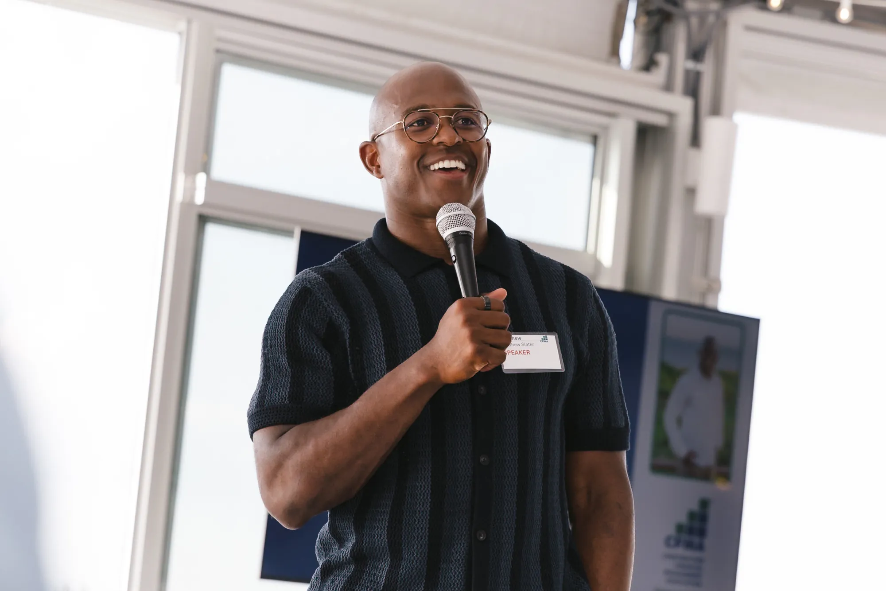
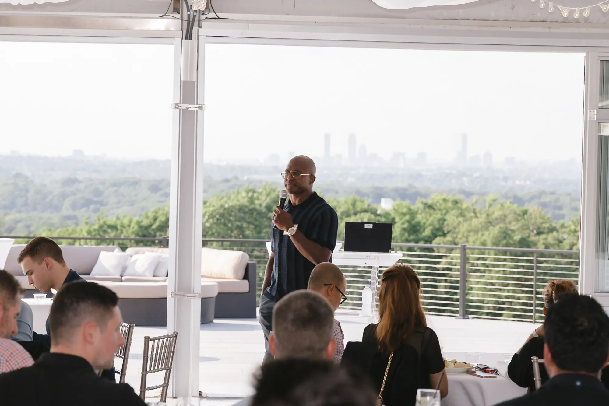
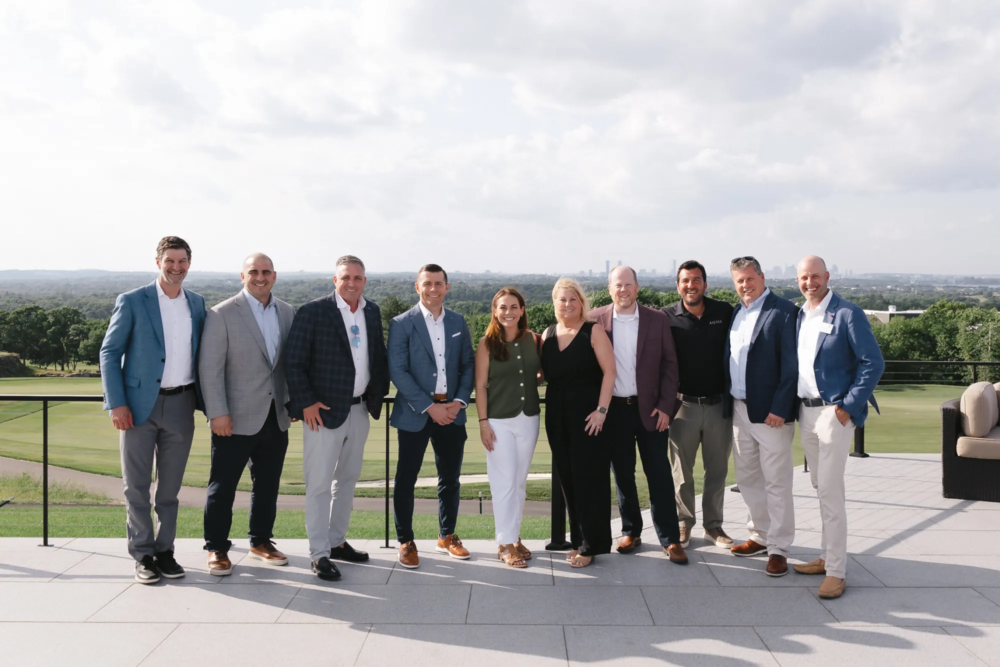
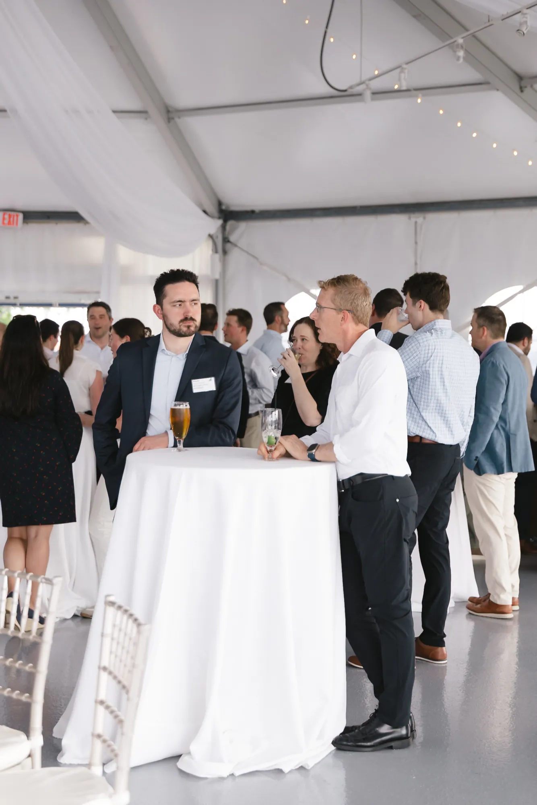
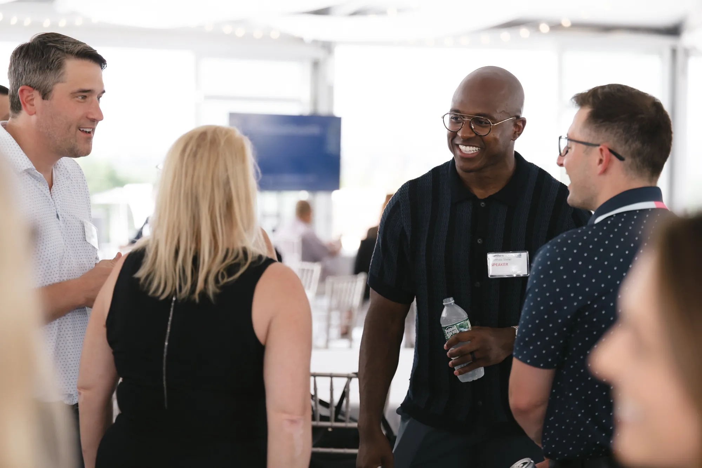
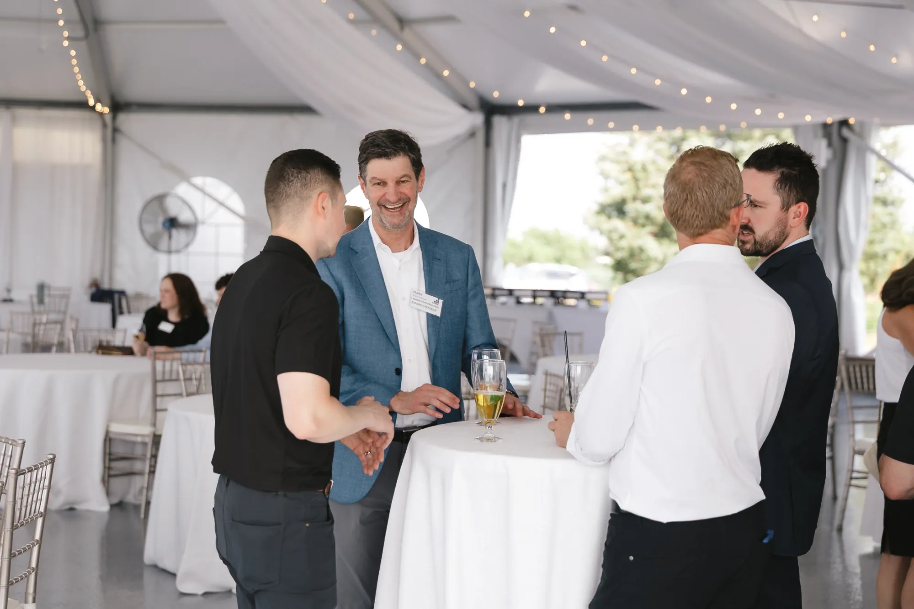
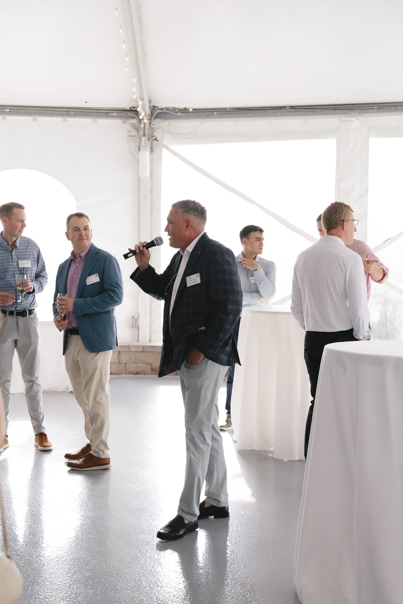
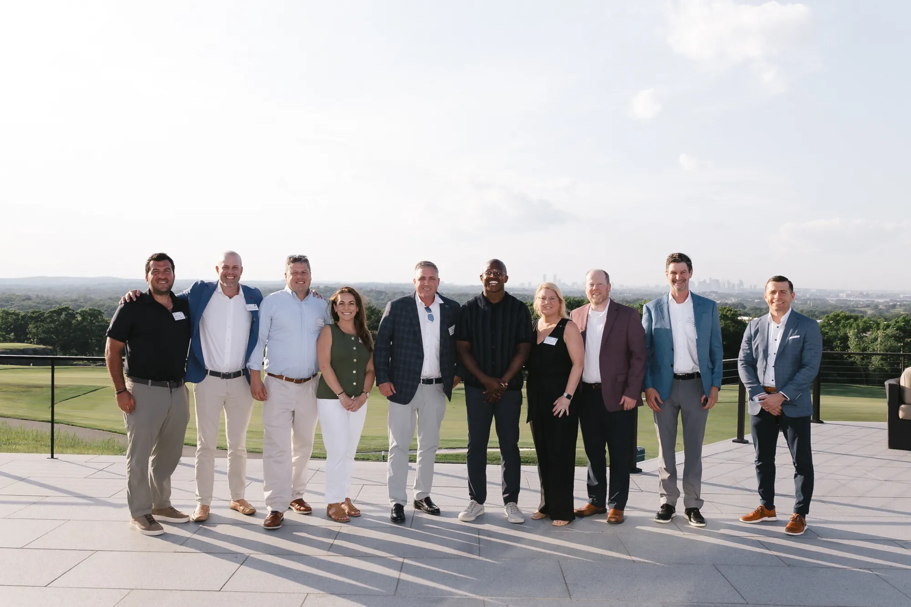
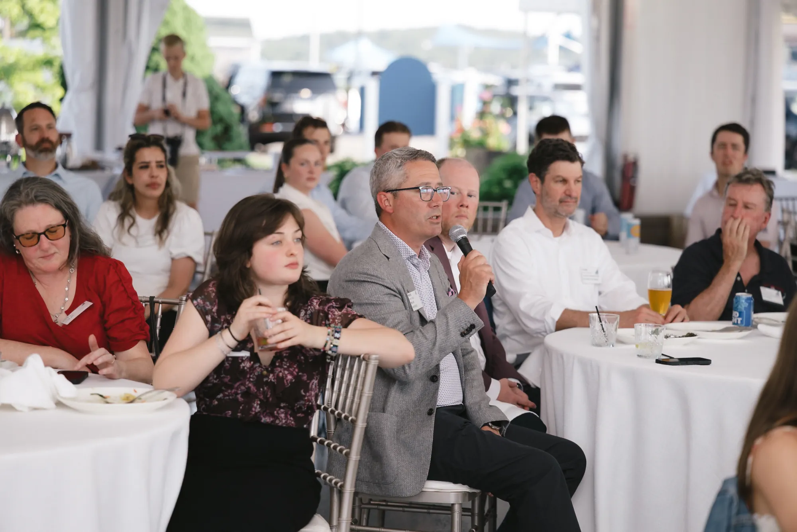
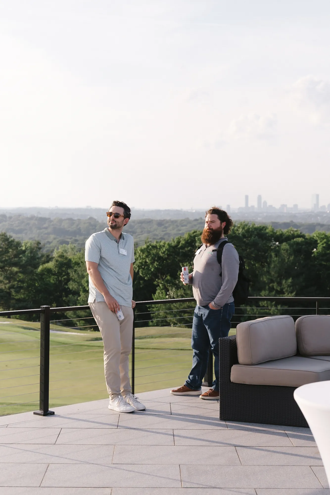
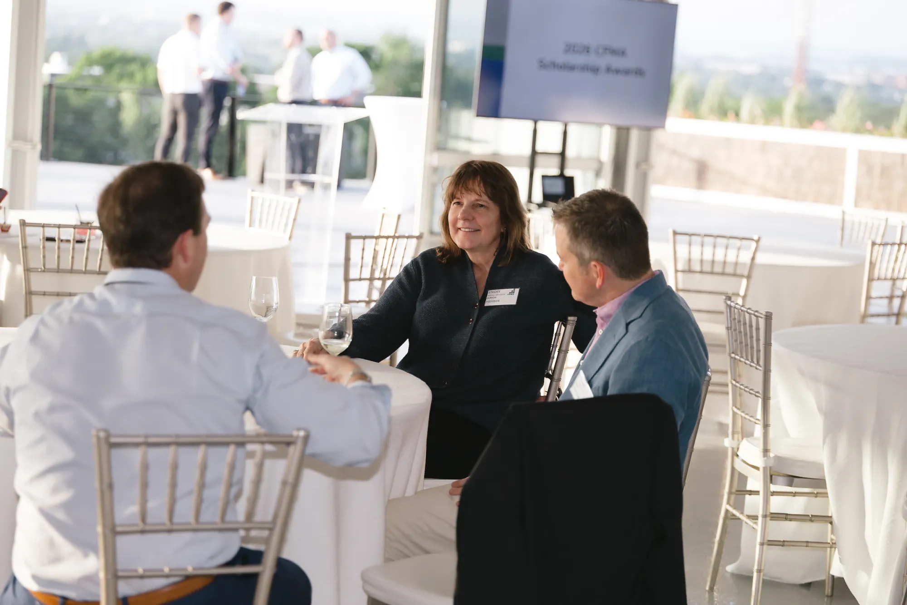
On June 11, 2026, the Construction Financial Management Association (CFMA) gathered at Granite Links Golf Club in Quincy, Massachusetts for an evening of networking, the chapter's 2026 scholarship awards, and a keynote from retired New England Patriots captain Matthew Slater, a 10-time Pro Bowl selection, three-time Super Bowl champion, and the 2023 Walter Payton NFL Man of the Year. As the event photographer, my job was to document the night the way it actually felt: construction finance leaders connecting over cocktails on the terrace, the panoramic Boston skyline behind every conversation, the scholarship recipients recognized, and a genuinely great keynote. Coverage like this is built for the way an organization uses it afterward: recap emails and social, sponsor and partner thank-yous, board and member communications, and the marketing for next year's event.
Michael Silvano, a Boston-based corporate event and gala photographer, photographed the 2026 CFMA event at Granite Links Golf Club in Quincy, Massachusetts.
The keynote speaker was Matthew Slater, the retired New England Patriots special teams captain, a 10-time Pro Bowl selection, three-time Super Bowl champion, and the 2023 Walter Payton NFL Man of the Year.
The event was held on June 11, 2026 at Granite Links Golf Club, 100 Quarry Hills Drive, Quincy, Massachusetts, a venue known for its panoramic views of the Boston skyline.
CFMA is the Construction Financial Management Association, the leading professional association for construction financial professionals such as CFOs, controllers, and accountants. The Boston Chapter serves members across Massachusetts and New England.
Yes, Michael Silvano photographs corporate events, galas, fundraisers, conferences, and association meetings across Boston and New England. Inquire at michael@michaelsilvano.com.